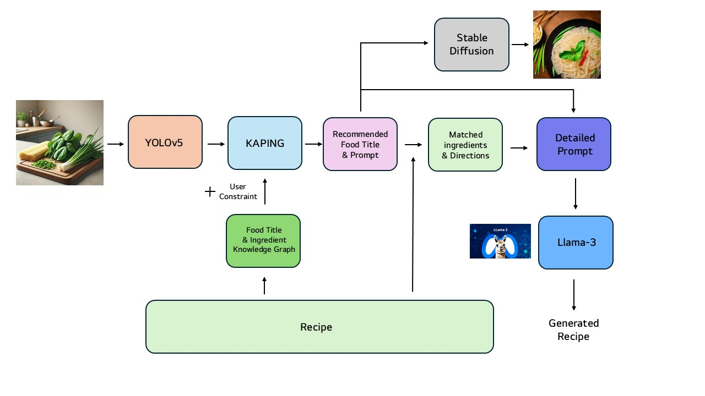

Home Chef: Ingredient-Based Recipe Recommendation
YAI 14th Project
Developed an image-based recipe recommendation system that identifies ingredients from refrigerator images and suggests recipes based on available ingredients. The system combines YOLOv5-based ingredient detection, a knowledge graph built with Neo4j, and knowledge-augmented prompting with KAPING to generate personalized recipes using Llama 3.